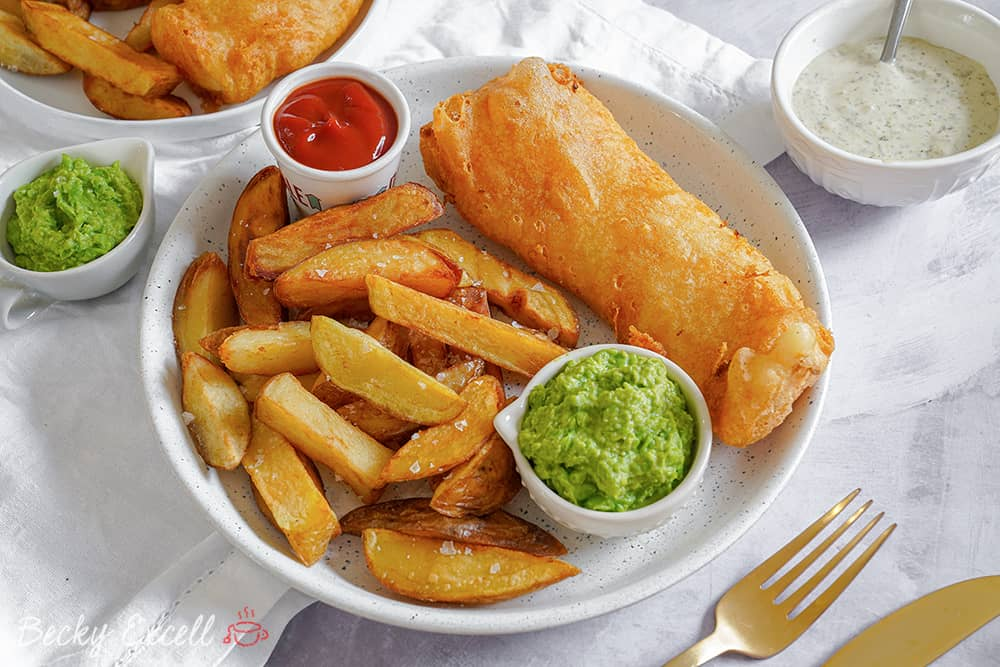

Fish and Chips

The best Fish and Chip recipe starts with a good, strong batter. The batter’s job is to encapsulate the fish to
form a crust, allowing the fish to steam within the crust and never crack. If the batter is done well, no oil
will ever penetrate the batter and have direct contact with the fish’s flesh. (When that happens, you get
greasy, soggy fish.)
Ingredients
- 3 pounds Russet potatoes about 4 large potatoes.
- 3 quarts canola oil for frying plus 1/4 additional cup.
- 3 cups all-purpose flour
- 1 cup cornstarch
- ½ teaspoon cayenne pepper
- ½ teaspoon paprika
- 1/4 teaspoon ground black pepper
- 3 tsp Diamond kosher salt
- 2 teaspoon baking powder
- 1 ½ – 2 pounds 1-inch-thick cod fillet or other thick white fish, such as hake or haddock cut into
approximately 3-ounce pieces. (Thoroughly dry fish with paper towels)
- up to 3 cups beer 24 ounces, cold. (Any beer will work in this recipe, even nonalcoholic beer with the
exception of dark stouts and ales.)
Instructions
- Slice fish into your preferred size portions. I like smaller pieces, about 2 ounces per piece, but sometimes
you need to follow the natural cuts of the filet. You want portions that are evenly sized as much as
possible. Pat dry with paper towel and set aside in the refrigerator.
- Peel the potatoes and slice off the “top & tail” to square off the ends of the potato and discard. Cut each
potatoes lengthwise into 1/2 inch fries. Add potato pieces into a water bath for about 30 minutes.
- Remove from water and pat dry with paper towel.
- In heavy-bottomed Dutch oven (about 7 quart capacity), heat TWO of the three quarts oil over medium heat to
350°F. Pro Tip: Use a Oil safe Probe to monitor and control temperature for perfect results. Add fries to
hot oil and increase heat to high. Fry, stirring with mesh spider or slotted metal spoon, until potatoes
turn light golden and just begin to brown at corners, 6 to 8 minutes.
- Transfer fries to paper towels to drain.
- Whisk the flour, cornstarch, cayenne, paprika, pepper, and salt in a large mixing bowl.
- Remove 1.5 of a cup of the flour mixture and add it to a casserole dish and set this flour & dish aside.
- Go back to the flour mixture that remains in the bowl and add baking powder. Whisk to combine.
- Add 1.5 cups beer to the flour mixture in the mixing bowl and stir until mixture is just combined (batter
will be lumpy). Add remaining beer as needed, 1 tablespoon at a time, whisking after each addition, until
batter falls from whisk in thin, steady stream and leaves faint trail across surface of batter.
- With the fries done, increase the heat of the oil to medium-high, add remaining quart of oil if necessary
and heat oil to 375°F. Pro Tip: Use a Oil safe Probe to monitor and control temperature for perfect results.
(Meanwhile, thoroughly dry fish with paper towels. Dredge each piece of fish in the flour mixture shaking
off excess flour. Dip 1 piece of fish in batter at a time and let excess run off, shaking gently. Place
battered fish back into the dish with the flour mixture and turn to coat both sides. (This is messy, but
worth it!)
- If you are working with a partner in the kitchen you can now add each piece directly to hot oil if or, if
you choose, keep pieces in single layer on baking sheet and repeat until all pieces are coated. (It’s best
if you have one person frying and another dredging. However, you can certainly do it in batches if working
alone, just be careful not to let it sit too long to avoid the batter sticking to the sheet pan)
- Tip: As you add the fish, you will likely need to adjust the heat to keep it maintained at 375-385°F. Not
adjusting your temperature to maintain oil temperature when frying is a common, and costly, mistake. The
fish will not crisp up. But make it too high, and everything will burn. Use an oil safe thermometer for best
results.
- Fry the fish, stirring occasionally, until golden brown, about 5 minutes depending on thickness. Use a
kitchen spider to remove fish from hot oil and transfer fish to a sheet pan lined with a gridded cooling
rack. Never walk away!
- Tip: If you are unsure about the doneness, remove one piece of fish and use an instant read thermometer to
test for a minimum of 145° F.
- Add the previously fried potatoes back to the hot oil for about 2 minutes to crisp up. Remove to fresh paper
towel or directly to a cooking rack. Immediately sprinkle with sea salt or kosher salt.
- Serve fish & chips with traditional malt vinegar and tartar sauce.
Home